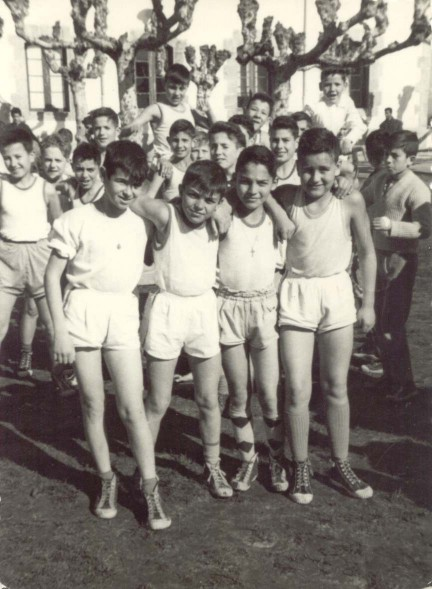

En la misma clase, pero con otros. El primero de la izquierda no recuerdo su nombre, siguen Antonio Serrano, yo y Pablo Díez Lago. Detrás se pueden reconocer a Manolo Sánchez, Miera, Silva, Bóveda, Secaduras, Morales Cobo, Pérez Ortega, ....
